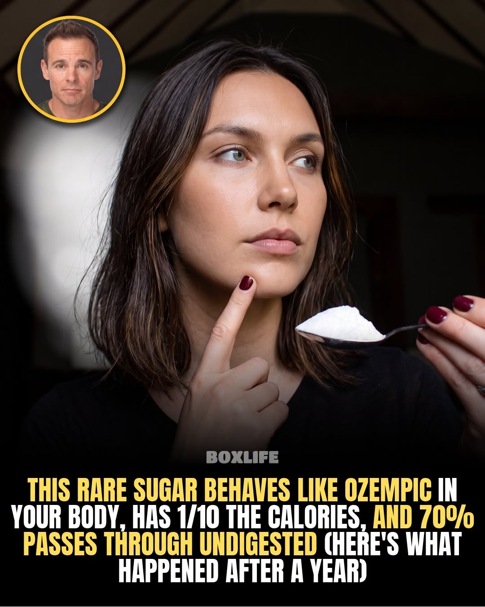

Robin Greenfield consumed allulose daily for over a year, and the results speak for themselves.
This rare sugar looks and bakes like regular sugar but behaves completely differently in your body, delivering just 1/10 the calories while potentially triggering the same GLP-1 hormone that Ozempic targets.
Studies show 5-10 grams of allulose alongside carbs can actually blunt blood sugar spikes, and Greenfield's personal experiment during a gestational diabetes test revealed stable glucose levels despite a massive 50-gram glucose load.
The mental clarity boost she experienced was the biggest win: no more brain fog after eating carbs, just sharp focus and stable energy.
25 grams triggered meaningful GLP-1 release in human trials, suggesting appetite and blood sugar regulation benefits that go beyond simple sweetness.
Safe within tolerance thresholds (0.4g per kg bodyweight per sitting), with zero major adverse effects reported in 12-48 week studies.
The bottom line: allulose isn't a magic bullet, but for anyone managing blood sugar without going full keto, this might be the closest thing to having your cake and eating it too.

 BoxLife MagazineIt Looks Like Sugar, Bakes Like Sugar, and Technically Is Sugar. But 1/10 the Calories, and It May Nudge the Same Hormone Ozempic TargetsRobin Greenfield has been consuming allulose every single day for over a year, and she's convinced it might be one of the healthiest sweeteners available.boxlifemagazine.com
BoxLife MagazineIt Looks Like Sugar, Bakes Like Sugar, and Technically Is Sugar. But 1/10 the Calories, and It May Nudge the Same Hormone Ozempic TargetsRobin Greenfield has been consuming allulose every single day for over a year, and she's convinced it might be one of the healthiest sweeteners available.boxlifemagazine.com